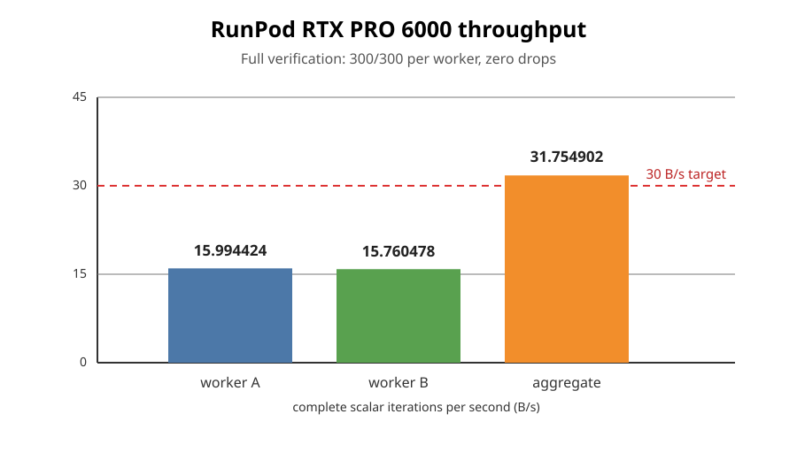

Run date: 2026-10-12. This report records a fresh RunPod aggregate throughput confirmation from the open iteration-redesign PR. It does not promote the v3 table walk to the DP32 campaign.
The 30 B/s objective is reached in aggregate with two independent RTX PRO 6000 Blackwell Server Edition workers running the audited shipping σ-table preset:
| worker | median | range | verification |
|---|---|---|---|
| A, RunPod pod `w7w5h1nz5nh5fo` | 15.994424 B/s | 15.980796–16.014132 | 300/300, 0 dropped |
| B, RunPod pod `q43dhtqgu21c9w` | 15.760478 B/s | 15.739614–15.783810 | 300/300, 0 dropped |
| aggregate | 31.754902 B/s | — | 600/600, 0 dropped |
The aggregate is 1.754902 B/s (5.85%) above the 30 B/s target. This is an aggregate result across two GPUs, not a claim that one GPU reaches 30 B/s.

The exact worker receipts and selected log lines are retained in `raw/worker-a.md` and `raw/worker-b.md`.
The same commit’s full tuned v3 table-walk redesign was also screened on the requested RTX PRO 6000 and measured 8.241422 B/s median, with its verification gate passing. The two-worker result therefore establishes a practical 30 B/s aggregate using the shipping σ-table path; it does not establish a 30 B/s single-GPU result for the new v3 table walk.
The benchmark workers were run with `–bench`; they did not write campaign DPs or alter the DP ingester. The redesign remains opt-in and separate from the live DP32 corpus.
The tracked `sigmajob.sh` harness derives the architecture from `nvidia-smi`, records source and host receipts, performs the 300-report reference replay, and suppresses timing on any correctness failure. The two pods exited successfully and were terminated after artifact upload.
Decision: 30 B/s achieved for the two-worker aggregate objective; single GPU v3 redesign objective remains unmet.